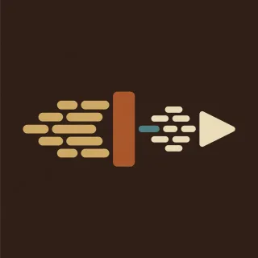

Pieces · handpan piece for D Kurd
Runaway
The fast one. Eighths at a run, a hard stop, a breath, and a sprint to the end.

- Kind
- Pieces
- Tempo
- 138 BPM
- Time signature
- 4/4
- Length
- 64 bars, about 111 seconds
- Notes used
- D3, A3, B♭3, C4, D4, E4, F4, G4, A4, C5
- Added
- 2026-10-11
Play in AlamutLearn bar by bar
About this pattern
Count 1 and 2 and at speed. Roll puts the loud notes on a three, three, two: 1, the and of 2, and 4. Fly is a tune with holes in it, and the second bar of each pair starts on an offbeat. Skid is five struck pairs with long gaps. Count through the gaps. Coast is soft and slow, then Sprint fills every eighth at the top of the pan. Start at 90. The piece is ready when Sprint stays even at 138.
Notation
Each line is one bar in 4/4. Numbers are the pan's fields, a dot is a rest, brackets hold notes struck together, and × is a tak on the shoulder. Read the number legend below.
Push
0 . 4 . 0 . 4 50 . 4 . 0 6 5 42 . 4 . 2 . 4 53 . 5 . 3 7 5 4
Roll
0 4 5 6 5 4 5 40 4 5 6 5 4 8 62 4 5 6 5 4 5 42 4 6 8 6 4 6 53 5 6 7 6 5 6 53 5 7 9 7 5 7 51 3 5 8 5 3 5 31 3 5 8 7 6 5 4
Fly
0 . 8 . 9 8 . 7. 8 . 6 . 5 4 .2 . 6 . 8 6 . 5. 6 . 4 . 3 2 .3 . 7 . 9 8 . 7. 8 . 9 . 8 7 .1 . 8 . 7 6 . 5[04] . . 5 6 7 8 9
Roll
0 4 5 6 5 4 5 40 4 5 6 5 4 8 62 4 5 6 5 4 5 42 4 6 8 6 4 6 53 5 6 7 6 5 6 53 5 7 9 7 5 7 51 3 5 8 5 3 5 31 3 5 8 7 6 5 4
Skid
[08] . . . . . [08] .. . [09] . . . . .[29] . . . . . [38] .. . [18] . 4 5 6 7
Coast
0 . . . 4 . 5 .6 . . . 5 . 4 .0 . . . 6 . 8 .7 . 6 . 5 . 4 5
Fly
0 . 8 . 9 8 . 7. 8 . 6 . 5 4 .2 . 6 . 8 6 . 5. 6 . 4 . 3 2 .3 . 7 . 9 8 . 7. 8 . 9 . 8 7 .1 . 8 . 7 6 . 5[04] . . 5 6 7 8 9
Sprint
0 8 9 8 7 8 9 80 8 7 6 7 8 9 82 6 7 8 7 6 7 62 6 8 9 8 6 5 43 7 8 9 8 7 8 73 5 7 9 7 5 7 91 8 9 8 7 6 5 6[08] . [09] . [08] 7 6 5
Sprint
0 8 9 8 7 8 9 80 8 7 6 7 8 9 82 6 7 8 7 6 7 62 6 8 9 8 6 5 43 7 8 9 8 7 8 73 5 7 9 7 5 7 91 8 9 8 7 6 5 6[08] . [09] . [08] 7 6 5
Stop
0 4 5 6 5 4 5 40 4 5 6 . . . .0 . . . 1 . . .[01] . . . . . . .
Number legend
0D3 (ding), 146.8 Hz1A3, 220.0 Hz2B♭3, 233.1 Hz3C4, 261.6 Hz4D4, 293.7 Hz5E4, 329.6 Hz6F4, 349.2 Hz7G4, 392.0 Hz8A4, 440.0 Hz9C5, 523.3 Hz×tak, a rim or shoulder tap
گریز
قطعهٔ تند. چنگهای دوان، یک توقف ناگهانی، یک نفس، و دوی سرعت تا پایان.
تند بشمارید: ۱ و ۲ و. «غلت» نتهای پرصدا را روی الگوی سه، سه، دو میگذارد: ۱، «و» بعد از ۲، و ۴. «پرواز» ملودیای پر از جای خالی است و میزان دوم هر جفت روی پشتضرب شروع میشود. «لغزش» پنج جفت نت همزمان با فاصلههای بلند است. در فاصلهها بشمارید. «سُرخوردن» نرم و آرام است، بعد «دوی سرعت» همهٔ چنگها را در بالای ساز پر میکند. با ۹۰ شروع کنید. قطعه وقتی آماده است که «دوی سرعت» با ۱۳۸ یکنواخت بماند.
More Pieces
Original pieces with named sections, written for this instrument.